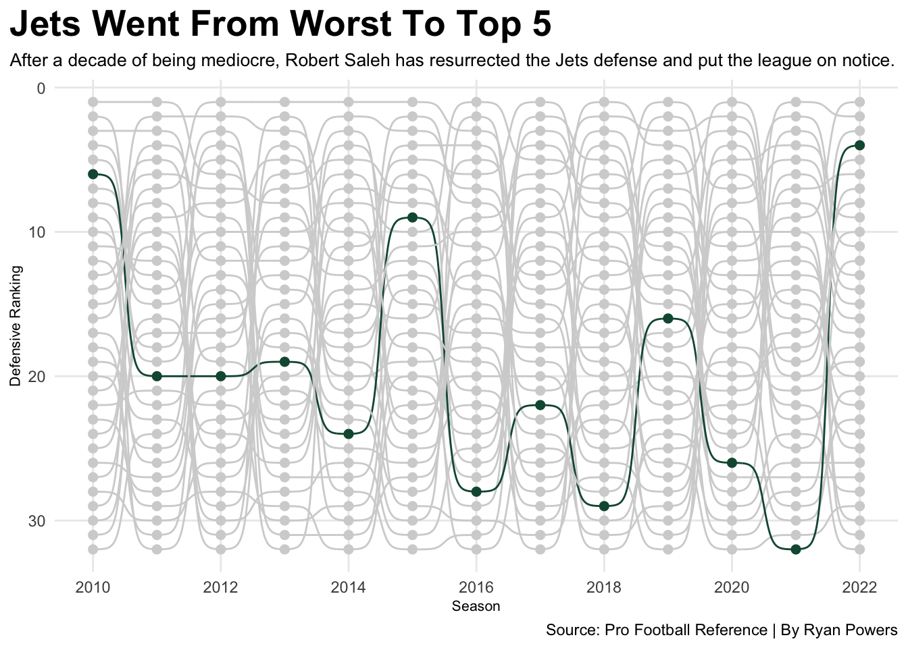
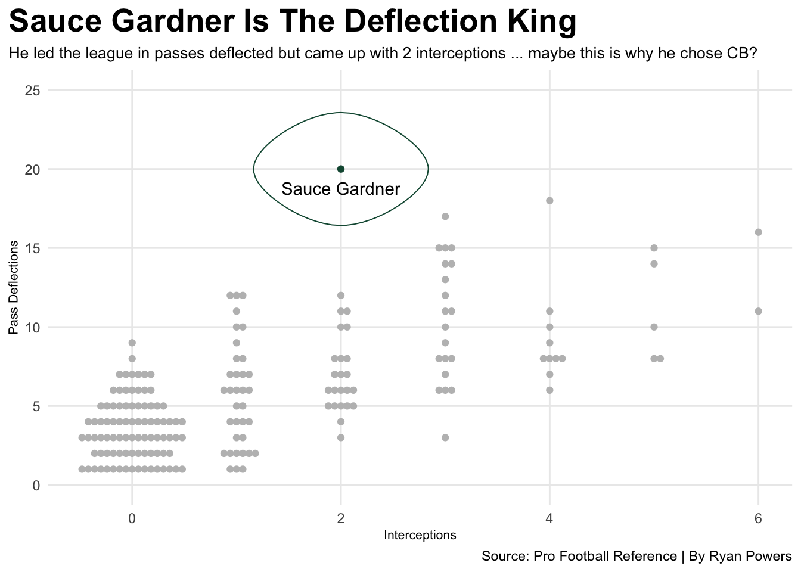
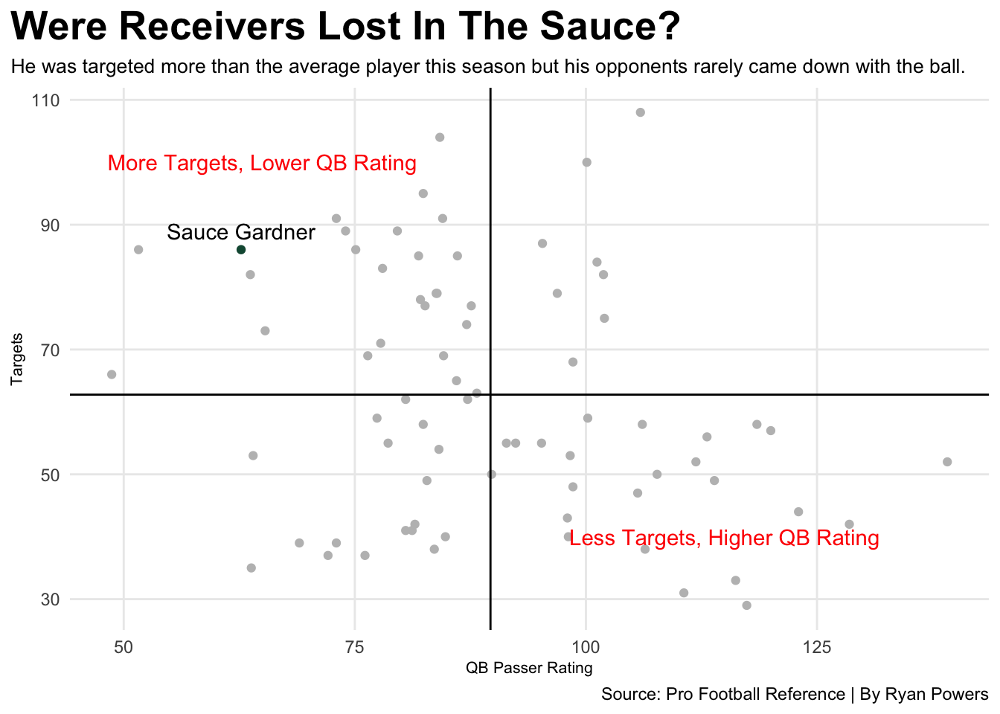

Many fans across the NFL have had the chance to see their team in the playoffs over the past decade, but not Jets fans. Since Steelers rookie Antonio Brown sealed the deal in the 2011 AFC Championship game, Jets fans have not seen a playoff berth. Yes, you read 2011 correctly.
Back then, Rex Ryan was the defensive mastermind behind the Jets defense and was just short of leading them to the Super Bowl back-to-back years. Now, in 2023, a new defensive expert, Robert Saleh, is looking to bring back the hard-hitting culture to the Big Apple.
Before the Saleh era, Jets fans have watched defensive mediocrity for over a decade. Outside of 2015, the team has consistently been ranked as a bottom-tier defense. In 2015, the Jets shot up to 9th place in defensive rankings and came close to breaking their playoff drought. Ironically, the Steelers ended that dream in the final week of the season with a win over the Browns, eliminating the Jets from playoff contention. The Jets only got worse following that season until the arrival of Robert Saleh.
In his first season, Saleh’s defense ranked dead last, the team’s lowest ranking since 2010. However, Saleh’s defense put the league on notice this year ending the season ranked 4th overall.
Code
library(tidyverse)library(ggbump)library(ggalt)library(ggbeeswarm)library(ggrepel)defense10 <-read_csv("defense10.csv") %>%mutate(Season =2010)defense11 <-read_csv("defense11.csv") %>%mutate(Season =2011)defense12 <-read_csv("defense12.csv") %>%mutate(Season =2012)defense13 <-read_csv("defense13.csv") %>%mutate(Season =2013)defense14 <-read_csv("defense14.csv") %>%mutate(Season =2014)defense15 <-read_csv("defense15.csv") %>%mutate(Season =2015)defense16 <-read_csv("defense16.csv") %>%mutate(Season =2016)defense17 <-read_csv("defense17.csv") %>%mutate(Season =2017)defense18 <-read_csv("defense18.csv") %>%mutate(Season =2018)defense19 <-read_csv("defense19.csv") %>%mutate(Season =2019)defense20 <-read_csv("defense20.csv") %>%mutate(Season =2020)defense21 <-read_csv("defense21.csv") %>%mutate(Season =2021)defense22 <-read_csv("defense22.csv") %>%mutate(Season =2022)defenserankings <-bind_rows(defense10, defense11, defense12, defense13, defense14, defense15, defense16, defense17, defense18, defense19, defense20, defense21, defense22)filterdefense <- defenserankings %>%select(Rk, Tm, Season)ggplot() +geom_bump(data=defenserankings, aes(x=Season, y=Rk, color=Tm)) +geom_point(data=defenserankings, aes(x=Season, y=Rk, color=Tm), size =2) +scale_color_manual(values =c("#D3D3D3", "#D3D3D3", "#D3D3D3", "#D3D3D3", "#D3D3D3", "#D3D3D3", "#D3D3D3", "#D3D3D3", "#D3D3D3", "#D3D3D3", "#D3D3D3", "#D3D3D3", "#D3D3D3", "#D3D3D3", "#D3D3D3", "#D3D3D3", "#D3D3D3", "#D3D3D3", "#D3D3D3", "#D3D3D3", "#D3D3D3", "#D3D3D3", "#D3D3D3", "#D3D3D3", "#125740", "#D3D3D3", "#D3D3D3", "#D3D3D3", "#D3D3D3", "#D3D3D3", "#D3D3D3", "#D3D3D3")) +scale_y_reverse() +scale_x_continuous(breaks=c(2010, 2012, 2014, 2016, 2018, 2020, 2022)) +labs(x="Season", y="Defensive Ranking", title="Jets Went From Worst To Top 5", subtitle="After a decade of being mediocre, Robert Saleh has resurrected the Jets defense and put the league on notice.", caption="Source: Pro Football Reference | By Ryan Powers" ) +theme_minimal() +theme(legend.position ="none",plot.title =element_text(size =20, face ="bold"),axis.title =element_text(size =8), plot.subtitle =element_text(size=10), panel.grid.minor =element_blank(),plot.title.position ="plot" )

A defense cannot go from worst to top 5 overnight, there has to be a factor that contributed to the Jets defensive success this season. In the 2022 NFL Draft, the New York Jets selected cornerback Ahmad “Sauce” Gardner.
During his rookie season, Gardner displayed his elite play-style earning the Defensive Rookie of The Year award, a Pro-Bowl spot, and became the first rookie at his position to earn All-Pro status since Ronnie Lott in 1981. Although Gardner did not display a masterclass in the interceptions department, he led the league in pass deflections.
Code
players <-read_csv("players.csv")fullplayer <- players %>%filter(GS >13) %>%select(Player, PD, Int) %>%na.omit()fullplayer <- fullplayer %>%mutate(Player=gsub("*","",Player, fixed=TRUE)) %>%mutate(Player=gsub("+","",Player, fixed=TRUE))sauce <- fullplayer %>%select(Player, PD, Int) %>%filter(Player =="Sauce Gardner")ggplot() +geom_beeswarm(data=fullplayer, aes(x=Int, y=PD), color="grey") +geom_beeswarm(data=sauce, aes(x=Int, y=PD), color="#125740") +geom_text(data=sauce, aes(x= Int, y=PD-1.2, label=Player)) +geom_encircle(data=sauce, aes(x= Int, y=PD), s_shape=.1, expand=.03, colour="#125740") +scale_y_continuous(limits=c(0,25)) +labs(x="Interceptions", y="Pass Deflections", title="Sauce Gardner Is The Deflection King", subtitle="He led the league in passes deflected but came up with 2 interceptions ... maybe this is why he chose CB?", caption="Source: Pro Football Reference | By Ryan Powers" ) +theme_minimal() +theme(legend.position ="none",plot.title =element_text(size =20, face ="bold"),axis.title =element_text(size =8), plot.subtitle =element_text(size=10), panel.grid.minor =element_blank(),plot.title.position ="plot" )

Gardner dominated this season batting the ball out of receiver’s hands compared to the rest of the league’s defenders. He was in a league of his own as a rookie! Why did he only come up with 2 interceptions? Maybe he has butter fingers or, realistically, he was in a position where deflecting the ball was the better option.
We need to look deeper and see where Gardner really thrived. Gardner received high praise around the league for his lockdown coverage and ability to keep his opponents close. With that being said, the opposing quarterback would not dare to throw his way and if they did, they would pay the price, right? Well, about half of that statement is correct.
Code
players2 <-read_csv("players2.csv")players2 <- players2 %>%mutate(Player=gsub("*","",Player, fixed=TRUE)) %>%mutate(Player=gsub("+","",Player, fixed=TRUE))filterscat <- players2 %>%filter(GS >13) %>%filter(Pos =="DB"| Pos =="CB"| Pos =="S") %>%na.omit()sauce2 <- filterscat %>%filter(Player =="Sauce Gardner")ggplot() +geom_point(data=filterscat, aes(x=Rat, y=Tgt), color="grey") +geom_point(data=sauce2, aes(x=Rat, y=Tgt), color="#125740") +geom_text(data=sauce2, aes(x= Rat, y=Tgt+3, label=Player)) +geom_vline(xintercept =89.67632) +geom_hline(yintercept =62.76316) +geom_text(aes(x=65, y=100, label="More Targets, Lower QB Rating"), color="red") +geom_text(aes(x=115, y=40, label="Less Targets, Higher QB Rating"), color="red") +labs(x="QB Passer Rating", y="Targets", title="Were Receivers Lost In The Sauce?", subtitle="He was targeted more than the average player this season but his opponents rarely came down with the ball.", caption="Source: Pro Football Reference | By Ryan Powers" ) +theme_minimal() +theme(legend.position ="none",plot.title =element_text(size =20, face ="bold"),axis.title =element_text(size =8), plot.subtitle =element_text(size=10), panel.grid.minor =element_blank(),plot.title.position ="plot" )

Compared to the rest of the NFL’s secondary, Sauce Gardner was targeted substantially high but what sets him apart is what happened after the ball left the quarterback’s hands. He was all over his opponents and placed in an elite category of being targeted high with a low QB rating allowed.
Now entering his second season in the NFL, Gardner has solidified himself as one of the franchise cornerstones of an increasingly successful defense. It has been a long 12 years for the New York Jets organization and their fans, but Gardner looks to continue his lockdown play-style and bring the “same old Jets” back to the glory days.